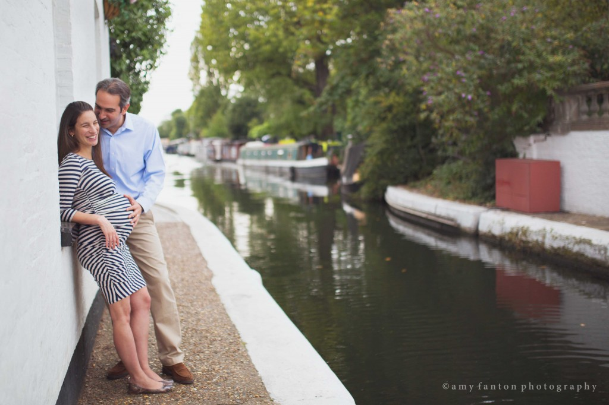
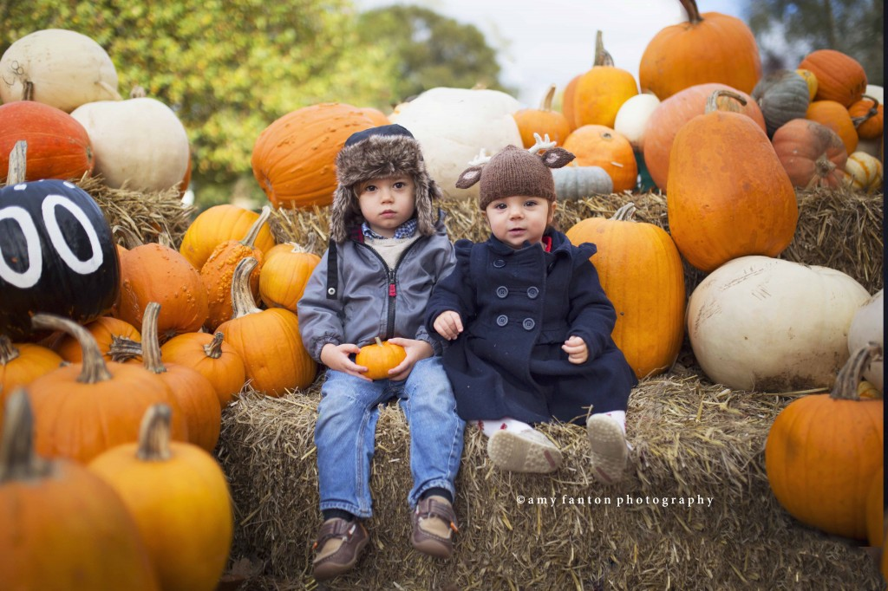

The Journal
Weddings, elopements and portrait sessions from London and far beyond — in my own words.
Weddings
22 June 2017
24 May 2017
Engagements
22 February 2017
1 January 2017
20 October 2016
15 October 2016
20 September 2016
1 September 2016
Inspiration
31 August 2016
21 August 2016
2016
15 February 2016
5 January 2016
15 December 2015
6 October 2015
Travel
3 October 2015
1 October 2015
7 August 2015
29 June 2015
6 May 2015
5 May 2015
17 February 2015
14 February 2015
13 February 2015
10 February 2015
Newborn & Maternity
29 December 2014
2 December 2014
24 November 2014
Family
19 November 2014
11 November 2014

3 November 2014
1 November 2014

29 October 2014
15 October 2014
25 September 2014
7 September 2014
3 September 2014
5 August 2014
29 July 2014
21 July 2014
16 July 2014
10 July 2014
26 June 2014
13 May 2014
22 April 2014
13 March 2014
5 March 2014
18 February 2014
12 February 2014
5 February 2014
2 December 2013
18 November 2013
10 October 2013
12 July 2013
11 July 2013
26 June 2013
25 June 2013
23 June 2013
No stories in this view yet.